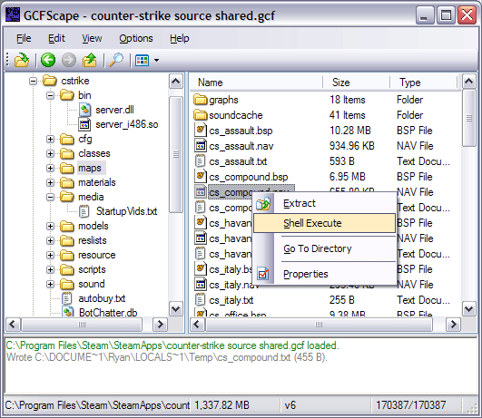
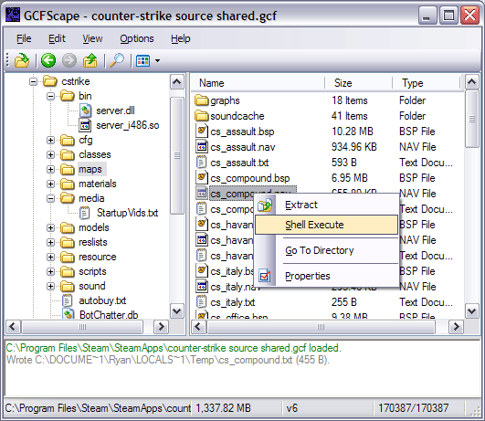

About
GCFScape - NemPosted: Jan 2nd, 2004 - 4:16:14 pm
About:

Features:
GCFScape is an explorer like utility that enables users to browse Half-Life packages and extract their contents. GCFScape supports .bsp, .gcf, .ncf, .pak, .sga, .vpk, .wad and .xzp packages and runs independently of Steam.
Screenshots:
- Supports .bsp, .gcf, .ncf, .pak, .sga, .vpk, .wad and .xzp packages.
- Explorer like interface for viewing package contents.
- Extract any file or folder within a package.
- Shell execute (preview) any file within a package.
- Validate any file or folder within a package.
- Defragment .gcf files.
- Search for files within a package.
- Configurable columns.
- Recent package menu.
- 100% Free.
Modified: Nov 23rd, 2008 - 7:44:56 pm[ 238102 Views ]
61. OskyldigPosted: Nov 1st, 2006 - 12:47:25
pm
Super, will do Nem <3
62. paratoModified: Nov 2nd, 2006 - 9:44:16
pm
Howdy there guys, I have a huge problem and I had this for a long period but cant
find any answers. Here is the deal, Im playing counter-strike but get this "Your map differs from
the server". I can play the map but not after a steam restart. And everytime is diferent map that
gets screwed, sometimes its dust2 and another time its inferno and nuke. Here is the list of what I have
tryed to do about the problem:
- Reinstaling steam
- Reinstaling the whole PC
- Removed and redownloaded the GCF
- Defraged the GCF cach
- Got a new harddrive
And non of this have helped me. I have tryed to search for an answer around the internet but I only cant find one stuppid answer "Remove the map and download" But how the hell can I remove a file thats inside the GCF! So at the moment Im screwed and there is no one that know the right think to do. I would be really happy if any of you guys could help me. thanks alot
- Reinstaling steam
- Reinstaling the whole PC
- Removed and redownloaded the GCF
- Defraged the GCF cach
- Got a new harddrive
And non of this have helped me. I have tryed to search for an answer around the internet but I only cant find one stuppid answer "Remove the map and download" But how the hell can I remove a file thats inside the GCF! So at the moment Im screwed and there is no one that know the right think to do. I would be really happy if any of you guys could help me. thanks alot
63. daniyalnawazPosted: Nov 3rd, 2006 - 4:02:14
pm
im also getting this error ("the file map is too small for it's data
block")... i downloaded Steam with CS from the following address...
ftp://ftp1.hg-computer.de/sites/counter-strike.de/counterstrike/SteamInstall_CS.exe
ftp://ftp1.hg-computer.de/sites/counter-strike.de/counterstrike/SteamInstall_CS.exe
64. NemPosted: Nov 3rd, 2006 - 5:43:30 pm
Parato:
Sorry man, but I can't help you (wouldn't know where to start). All I can say is that you can't remove files from within a GCF file (see the FAQ for a more in depth answer). You should contact Valve for more help.
daniyalnawaz:
The error message means that your GCF file has been truncated somewhere after the header (i.e. the end of the file is missing). Try deleting the GCF file, Steam should redownload it.
Sorry man, but I can't help you (wouldn't know where to start). All I can say is that you can't remove files from within a GCF file (see the FAQ for a more in depth answer). You should contact Valve for more help.
daniyalnawaz:
The error message means that your GCF file has been truncated somewhere after the header (i.e. the end of the file is missing). Try deleting the GCF file, Steam should redownload it.
65. The ManPosted: Nov 4th, 2006 - 11:24:34
pm
Hi, starting from (i think) 1.51 gcfscape cant seem to read pak files
correctly.
Instead of showing folders with files in it, it shows the file with the folder as part of the filename.
I cant extract files becuase "/" isnt allowed in the filename for windows and it confuses windows because of that.
I've checked it against my old half-life paks and homemade paks made through pakscape and neither work.

Instead of showing folders with files in it, it shows the file with the folder as part of the filename.
I cant extract files becuase "/" isnt allowed in the filename for windows and it confuses windows because of that.
I've checked it against my old half-life paks and homemade paks made through pakscape and neither work.
66. NemPosted: Nov 5th, 2006 - 11:38:11 am
Not sure where this crept in, but it's a small typo in HLLib's path construction.
I've fixed it and the fix will be in v1.6.0 which I will be releasing in the next few days.
Thanks!
Thanks!
67. Ay2daLoPosted: Nov 23rd, 2006 - 9:06:07
pm
wonderful
68. blackdozePosted: Dec 22nd, 2006 - 7:18:52
am
I also have such a error w my counter-strike.gcf, half-life.gcf
and as previously said it prints "Invalid file: the file map is too small for its data blocks"
counter-strike.gcf - 350 Mb, half-life.gcf - 420 Mb
I've downloaded 'em from ftp://ftp.clicknetgames.ro/download/HL/Steam/SteamInstall_CS.exe
and as previously said it prints "Invalid file: the file map is too small for its data blocks"
counter-strike.gcf - 350 Mb, half-life.gcf - 420 Mb
I've downloaded 'em from ftp://ftp.clicknetgames.ro/download/HL/Steam/SteamInstall_CS.exe
69. blackdozePosted: Dec 22nd, 2006 - 7:42:33
am
It's clear. I don't need an answer. Sorry!
70. zdeppPosted: Dec 30th, 2006 - 12:27:13
pm
Ok I'm having the same problem that blackdoze had but unfortunately for me its not so
clear what to do because I'm not so computer savy. I have the same error message and I just want to know
how to fix it. I downloaded it from
http://games.softpedia.com/progDownload/Counter-Strike-Download-427.html
any help i can get is appreciated, thanks
any help i can get is appreciated, thanks
71. NemPosted: Dec 30th, 2006 - 11:01:30 pm
I'll look into it when I get back from vacation...
72. the_chillPosted: Jan 18th, 2007 - 1:48:48
am
Hello i got the problem a lot of my gcfs like half-life.gcf or condition zero.gcf are
incomplete. What shoud I do?
73. BluefangPosted: Jan 18th, 2007 - 12:49:09
pm
Well, first of all, make sure that they are fully downloaded and updated. You can
check that by running Steam and looking in the 'My Games' tab. You can also go in to the game's
properties and in the 'Local Files' tab you can verify their integrity.
There are also (last time I checked) a handful of files in some of the GCF files that don't actually exist. These are normal. For example, files for the 64-bit version aren't downloaded on 32-bit systems.
There are also (last time I checked) a handful of files in some of the GCF files that don't actually exist. These are normal. For example, files for the 64-bit version aren't downloaded on 32-bit systems.
74. StinoPosted: Jan 21st, 2007 - 2:20:45
am
i'm able to extract the bmp's from a bsp file of my clanmap to change some sponsors,
but how am i'm able again to put them back into the bsp (cs 1.6) becouse bspzip is only for source and i
don't know any other program wich is able of doing this
75. NemPosted: Jan 21st, 2007 - 1:58:45 pm
You can't; at least not that I know of.
76. StinoPosted: Jan 28th, 2007 - 3:09:50
am
it whould be quite nice if we could extract the lightmaps to put high res versions in
place :D that whould own.
no more recompiling for light glitches :D
no more recompiling for light glitches :D
77. ColdsteelModified: Apr 28th, 2007 - 12:01:45
am
GCFScape
Could not Open:
C:\Documents and Settings\D\Desktop\The Big WAD\PLDECAL.WAD
Error:
Invalid File: the file's signature does not match.
Please - Help
78. NemPosted: Apr 28th, 2007 - 11:27:05 am
Invalid File: the file's signature does not match. means that the file's
internal signature is not WAD3 (which is the only type of .wad file GCFScape supports).
Look for Wally for all your .wad editing needs.
Look for Wally for all your .wad editing needs.
79. thefonzPosted: Jul 26th, 2007 - 5:30:31
pm
i keep getting random crashes in gcfscape, sometimes the occur when i start it, other
times when its just idleing, changing folders and always when i try to extract a file. ive tried
everything i can think of, but to no avail.
oh, ther error message i recieve is the generic "send error report" message
any clue as to whats wrong?
oh, ther error message i recieve is the generic "send error report" message
any clue as to whats wrong?
80. DanPMKPosted: Aug 1st, 2007 - 2:27:19
am
Hello.
First, I'd like to thank you for creating such excelent tools; GCFScape is excelent and I've used it many times.
Anyways, I was wondering, do you have a list handy of all the GCF internal IDs used by Steam? I know they are in each .gcf etc. file, but I do not have a way to extract them.
Is there a feature in GCFScape that I am overlooking?
If it is in any way possible, if anyone has it, I'd really like such a list, or maybe even the next time you update the program, you add the CacheID number somewhere.
Thanks much,
Daniel Pabon
First, I'd like to thank you for creating such excelent tools; GCFScape is excelent and I've used it many times.
Anyways, I was wondering, do you have a list handy of all the GCF internal IDs used by Steam? I know they are in each .gcf etc. file, but I do not have a way to extract them.
Is there a feature in GCFScape that I am overlooking?
If it is in any way possible, if anyone has it, I'd really like such a list, or maybe even the next time you update the program, you add the CacheID number somewhere.
Thanks much,
Daniel Pabon
81. NemPosted: Aug 1st, 2007 - 12:40:39 pm
thefonz:
i keep getting random crashes in gcfscape, sometimes the occur when i start it,
other times when its just idleing, changing folders and always when i try to extract a file. ive tried
everything i can think of, but to no avail.
If you're not getting .NET exceptions (there should be a Details button on the error message if you are) then it is .NET that is crashing, not my application. You may want to check your .NET installation, and your system for other possible errors (such as bad memory).
DanPMK:
Anyways, I was wondering, do you have a list handy of all the GCF internal IDs used
by Steam? I know they are in each .gcf etc. file, but I do not have a way to extract
them.
Is there a feature in GCFScape that I am overlooking?
Is there a feature in GCFScape that I am overlooking?
For a complete list of Steam application IDs, see the Source SDK Wiki.
You can also view .gcf file IDs within GCFScape by right clicking on the root folder and selecting Properties.
82. 4-Legged TumorPosted: Sep 14th, 2007 -
2:57:30 pm
just pre loaded tf2, and it's accessible with GCFscape (thought it would be encrypted
or something). VTF EDit cant open the textures, and i couldnt get hammer to open a decompiled maps, but
you can still see the scripts and sounds (idk about models).
:)
:)
84. RawMeat3000Posted: Oct 10th, 2007 - 4:22:34
am
Can we use GCFScape to embed vtf/vmts into a GCF file? As in taking out a texture,
Photoshoping it, then putting back in to act like the original?
85. RawMeat3000Posted: Oct 10th, 2007 - 4:26:39
am
Is there another program to do that?
86. MisterGonePosted: Oct 12th, 2007 - 1:05:44
pm
I'm running into a problem trying to defrag my TF2 files, I keep getting
"Package has volatile access enabled, please disable it"
I've tried turning "write access" and "Volatile Access" on and off but it doesn't make a difference. Any ideas?
I've tried turning "write access" and "Volatile Access" on and off but it doesn't make a difference. Any ideas?
87. l00n_NooNPosted: Nov 9th, 2007 - 4:46:35
am
I get some strange and bad error please help me!
C:\Program Files\GCFScape\GCFScape.exe
The application has failed to start beacuse the application configuration is incorrect.Reinstalling the application may fix this problem.
So i reinstall it and again this problem..
I decide to reinstall C:/
I reinstall it i put new windows and again it appear this error!
Please help!
C:\Program Files\GCFScape\GCFScape.exe
The application has failed to start beacuse the application configuration is incorrect.Reinstalling the application may fix this problem.
So i reinstall it and again this problem..
I decide to reinstall C:/
I reinstall it i put new windows and again it appear this error!
Please help!
88. Signal64Modified: Dec 8th, 2007 - 9:13:31
pm
I've downloaded HL2 EP 2 twice on two different systems from scratch and went through
the verification process, but still getting a couple of corruption errors when trying to extract with
gcfscape 1.66.
episode two content.gcf:
Error writing C:\DOCUME~1\xxxx\LOCALS~1\Temp\ep2\sound\vo\outland_02\sheckley_cover12.wav (Error: Unexpected end of GCF stream (0 B of 90599 B). Has the GCF file been completely acquired?)
Error writing C:\DOCUME~1\xxxx\LOCALS~1\Temp\ep2\sound\vo\outland_02\sheckley_cover24.wav (Error: Unexpected end of GCF stream (0 B of 106668 B). Has the GCF file been completely acquired?)
episodic 2007 shared.gcf:
Error writing C:\DOCUME~1\xxxx\LOCALS~1\Temp\episodic\makereslists.txt (Error: Unexpected end of GCF stream (0 B of 899 B). Has the GCF file been completely acquired?)
Error writing C:\DOCUME~1\xxxx\LOCALS~1\Temp\episodic\maplist.txt (Error: Unexpected end of GCF stream (0 B of 262 B). Has the GCF file been completely acquired?)
Is this a goof-up on them distributing a corrupt gcf or is it something to look at in gcfscape?
episode two content.gcf:
Error writing C:\DOCUME~1\xxxx\LOCALS~1\Temp\ep2\sound\vo\outland_02\sheckley_cover12.wav (Error: Unexpected end of GCF stream (0 B of 90599 B). Has the GCF file been completely acquired?)
Error writing C:\DOCUME~1\xxxx\LOCALS~1\Temp\ep2\sound\vo\outland_02\sheckley_cover24.wav (Error: Unexpected end of GCF stream (0 B of 106668 B). Has the GCF file been completely acquired?)
episodic 2007 shared.gcf:
Error writing C:\DOCUME~1\xxxx\LOCALS~1\Temp\episodic\makereslists.txt (Error: Unexpected end of GCF stream (0 B of 899 B). Has the GCF file been completely acquired?)
Error writing C:\DOCUME~1\xxxx\LOCALS~1\Temp\episodic\maplist.txt (Error: Unexpected end of GCF stream (0 B of 262 B). Has the GCF file been completely acquired?)
Is this a goof-up on them distributing a corrupt gcf or is it something to look at in gcfscape?
89. NemPosted: Dec 13th, 2007 - 1:40:27 pm
I'm not sure why this occurs, but it seems to be pretty common place for .gcf files
to be missing a few files (my .gcf files are missing the above files). I can only speculate that the
files were originally part of the .gcf when it was first constructed, but later removed when it was
found that they were unnecessary. For example, maplist.txt is only needed for MODs, and
sheckley_cover12.wav may have never been used.
GCFScape displays the above error when processing these files because it cannot tell them apart for ordinary unacquired files. I believe these errors are safe to ignore.
GCFScape displays the above error when processing these files because it cannot tell them apart for ordinary unacquired files. I believe these errors are safe to ignore.
90. fire64Modified: Jan 5th, 2008 - 3:39:28
am
Please add new functions in GCFScape:
rename files inwardly file GCF
edit files inwardly file GCF
change the version of file GCF
change CacheID GCF file
rename files inwardly file GCF
edit files inwardly file GCF
change the version of file GCF
change CacheID GCF file
91. leroPosted: Apr 10th, 2008 - 12:16:37
am
XDE ZAGRUZKA? ILI KAK EE MOZNO CKACHAT????
92. FookPosted: Jun 3rd, 2008 - 7:56:47 am
Hi,
got some serious problem with this program:
I'm runing winXp SP2 and i've already installed the Dot-Net-Framework using the link provided. [so i got dotnetV2.0]
But whenever i try to start GCFscape 1.6.7 an error is displayed that this software couldnt be started and needs to be reinstalled to work... however i deinstalled and reinstalled everything 3times by now (dotnet and gcfscape) but no change.
-> http://techwww.in.tu-clausthal.de/site/Personen/Fritzsche/gcf.png
is there any solution for this? thx.
got some serious problem with this program:
I'm runing winXp SP2 and i've already installed the Dot-Net-Framework using the link provided. [so i got dotnetV2.0]
But whenever i try to start GCFscape 1.6.7 an error is displayed that this software couldnt be started and needs to be reinstalled to work... however i deinstalled and reinstalled everything 3times by now (dotnet and gcfscape) but no change.
-> http://techwww.in.tu-clausthal.de/site/Personen/Fritzsche/gcf.png
{kind=link}
is there any solution for this? thx.
93. NemPosted: Jun 5th, 2008 - 1:22:06 pm
What does the error message say in English?
94. KajanisPosted: Jun 8th, 2008 - 8:01:17
pm
Hi!
Recently Valve has made some changes in NCF file structure.
Any prognoses about supporting this in future?
Recently Valve has made some changes in NCF file structure.
Any prognoses about supporting this in future?
95. NemPosted: Jun 8th, 2008 - 11:50:23 pm
I wasn't aware of this Kajanis; if you have any of these newer .ncf files, please
email them to me so I can examine them.
96. Pat4everPosted: Jun 9th, 2008 - 8:03:09
pm
When I try to open sound files in Half Life 2 it says vcd files have no default
program associated with it.
97. NemPosted: Jun 10th, 2008 - 1:41:46 am
.vcd files are not audio files, you are looking for .wav and .mp3 files.
98. Pat4everPosted: Jun 13th, 2008 - 8:18:32
pm
But that's all there is in the sound folders.
99. NemPosted: Jun 13th, 2008 - 8:24:07 pm
What game are you looking for the sounds of?
100. Pat4everPosted: Jun 21st, 2008 - 2:03:53
am
Half Life 2.
101. NemPosted: Jun 21st, 2008 - 6:23:52 am
Look in "source sounds.gcf".
102. xanderPosted: Jul 7th, 2008 - 4:16:08
pm
Hi.. I just downloaded the gcf thing.. I were surfing on the internet for the boink
sound in tf2 and then i found a boy at fpsbana that had a problem the same as mine.. He were told to
search in the steam folder in program files..
I looked in the folder steam steamapps (My-user-name) team fortress 2 tf sounds... I were told to the vo file?? There is no vo file.. And by the way.. Why aint there any tutorials to gcfscape??
I looked in the folder steam steamapps (My-user-name) team fortress 2 tf sounds... I were told to the vo file?? There is no vo file.. And by the way.. Why aint there any tutorials to gcfscape??
103. xanderPosted: Jul 7th, 2008 - 4:22:24
pm
BTW.. Sorry for my bad enlish.. Im from Denmark..:)
I have looked for that stupid dound for 2 months now...
I just want to make an sms tune..
I have looked for that stupid dound for 2 months now...
I just want to make an sms tune..
104. NemPosted: Jul 9th, 2008 - 9:47:19 pm
There is a bit of a tutorial here,
but GCFScape is pretty simple and doesn't really need a tutorial. The sounds you are looking for are in
team fortress 2 content.gcf under tf\sound.
105. xanderPosted: Jul 11th, 2008 - 11:14:14
am
I found the sound all.. Thanks alot:)
106. Dan-OneModified: Aug 22nd, 2008 - 4:06:13
am
I found error in latest release of GCFScape (1.6.9).
The value 'Size on Disk' in gcf file properties dialog and status bar is negative for file 'team fortress 2 content.gcf'. This probably because real size of this file is more than 2GiB, and you store this value in signed variable. This error affects defragmenting: defrag info doesn't appear in progress dialog, but after some time defragmenting ends and file successfully defragments without corruption. (It's good idea to store all big values in QWORD vars, or in pair of DWORDs =)
The value 'Size on Disk' in gcf file properties dialog and status bar is negative for file 'team fortress 2 content.gcf'. This probably because real size of this file is more than 2GiB, and you store this value in signed variable. This error affects defragmenting: defrag info doesn't appear in progress dialog, but after some time defragmenting ends and file successfully defragments without corruption. (It's good idea to store all big values in QWORD vars, or in pair of DWORDs =)
107. NemPosted: Aug 23rd, 2008 - 12:05:53 am
I tried to use unsigned integers in HLLib and GCFScape whenever possible, but it
seems there are a handful of places where I neglected to. I've fixed these places and will be releasing
an update tomorrow.
I don't think we need to worry about anything bigger than 4 GB because the internal GCF data structure uses 32 bit unsigned integers for offsets etc.
I don't think we need to worry about anything bigger than 4 GB because the internal GCF data structure uses 32 bit unsigned integers for offsets etc.
108. PidgeonPosted: Nov 1st, 2008 - 8:59:19
pm
I'm using Vista Business SP 1 and the extract function seems to screw up
the file system. Files and folders "extracted" using GCF scape or another tool from Nem's
Tools only appear in Open dialogue boxes. When I try to navigate to the folder using Explorer or CMD it
simply doesn't exist.
If I delete the containing folder and use GCFScape it is asif the delete never happend - both the container and all it's children are available through the Open dialogue.
I do not know what is happening but I'm very concerned that there are now files and folders that seem to exist and I cannot see. I've tried all the usual things of changing options so I can see hidden and protected files - I've even gone as far as using sysinternals tools to try and find out what's happening but I've no idea.
Can you please explain what this is doing?
If I delete the containing folder and use GCFScape it is asif the delete never happend - both the container and all it's children are available through the Open dialogue.
I do not know what is happening but I'm very concerned that there are now files and folders that seem to exist and I cannot see. I've tried all the usual things of changing options so I can see hidden and protected files - I've even gone as far as using sysinternals tools to try and find out what's happening but I've no idea.
Can you please explain what this is doing?
109. NemPosted: Nov 8th, 2008 - 4:23:58 pm
I've tried GCFScape on all my Vista boxes and I can't seem to reproduce this.
GCFScape just uses the standard Windows API file IO functions to extract files. I have no idea how
GCFScape could be directly responsible for the experience you have described.
110. supersnailPosted: Nov 24th, 2008 - 4:55:51
pm
I was trying to get the .vmf file from a .bsp and i gave me this:
could not open:
C:/program files...(you dont need the directory)
error:
Invalid File Version
The file's signature doesn't match
Please Help
Until then
and
could not open:
C:/program files...(you dont need the directory)
error:
Invalid File Version
The file's signature doesn't match
Please Help
Until then
and
111. Bonzi77Modified: Nov 26th, 2008 - 2:45:24
pm
Error writing C:\DOCUME~1\Paul\LOCALS~1\Temp\alarm1.wav (Error: File not found.)
How do I make that not happen?
How do I make that not happen?
112. Chewy_SoloModified: Dec 7th, 2008 - 2:34:23
pm
whoops figured it out
113. Freeman117Posted: Dec 13th, 2008 - 3:46:19
pm
Could you please add support for the silent hill:homecoming .pak files? They are not
the same as the regular .pak files. I think there encrypted somehow. I have been looking everywhere for
an extraction program that can read them but so far nothing.I want to see what model format the game
uses so I can convert some to use in gmod! I would extremely appreciate it if you could figure out that
file format.
114. Dan-OnePosted: Dec 28th, 2008 - 3:09:47
pm
Batch validation would be good addition to GCFScape. I needed this feature two days
ago when some antivirus after buggy update corrupted my hard disk file system entries. chkdsk is good
tool, but GCF validation may be better for GCF files (or to completely calm me down =).
115. NemPosted: Dec 31st, 2008 - 5:00:34 pm
I may add this if I get some free time in the future. In the mean time you can use HLLib to batch validate your .gcf files using the following batch
file:
for %%F in (*.gcf) do HLExtract.exe -m -v -s -t root -p "%%F"
pause
Code:
for %%F in (*.gcf) do HLExtract.exe -m -v -s -t root -p "%%F"
pause
116. RavagePosted: Jan 3rd, 2009 - 12:22:14
pm
Cn someone explain the object viewer options->exporting tab? I'm hoping theres a
way to export a maps textures when using the file -> export -> save as vmf - i.e. I want oto open
my hl1 map ravmap and pull it into hl2:dm, I'm wondering if the export from this fine program could dump
the textures in a materials/ravmap/ folder and thus the vmt file use these textures - it would be far
better than everything on orange!!!
117. slythoughtPosted: Jan 8th, 2009 - 5:35:26
pm
does cgfscape only work for valve game file? i've opened up my dawn of war cgf to
extract the music.sga and i get the error saying that the file isn't downloaded yet but i know it is :(
118. homiJ15Posted: Feb 9th, 2009 - 8:06:02
pm
So, i cant play any of the sounds in the GCF files using GCFScape. Whats the deal?
119. Dg_INCPosted: Apr 24th, 2009 - 12:06:12
am
Kind all day! Me it interests here "Error writing C:\root\testapp.exe (Error:
NCF files are indexes and do not contain any file data.)". That it means, and what it is necessary
to make?
Sorry for my english.
Sorry for my english.
120. TheMassModified: May 1st, 2009 - 3:56:32
pm
Pidgeon:
I'm using Vista Business SP 1 and the extract function seems to screw
up the file system. Files and folders "extracted" using GCF scape or another tool from Nem's
Tools only appear in Open dialogue boxes. When I try to navigate to the folder using Explorer or CMD
it simply doesn't exist.
If I delete the containing folder and use GCFScape it is asif the delete never happend - both the container and all it's children are available through the Open dialogue.
I do not know what is happening but I'm very concerned that there are now files and folders that seem to exist and I cannot see. I've tried all the usual things of changing options so I can see hidden and protected files - I've even gone as far as using sysinternals tools to try and find out what's happening but I've no idea.
Can you please explain what this is doing?
If I delete the containing folder and use GCFScape it is asif the delete never happend - both the container and all it's children are available through the Open dialogue.
I do not know what is happening but I'm very concerned that there are now files and folders that seem to exist and I cannot see. I've tried all the usual things of changing options so I can see hidden and protected files - I've even gone as far as using sysinternals tools to try and find out what's happening but I've no idea.
Can you please explain what this is doing?
Hello, I'm having the exact same problem as the one mentioned above, except I'm using Vista Home Premium. The extract doesn't seem to extract anything and Vista doesn't recognize that the folder was created.
However, I seem to have found out the reason why this occurs, though I'm not sure exactly why this would do anything. It appears to be related to the Make New Folder command when attempting to extract files. If a new folder is created using GCFScape, Vista cannot recognize it. But if the files were extracted to an existing folder, then there is no problem.
Unfortunately, there doesn't seem to be a way to get around this, and I'm having trouble deleting the files created because Vista cannot see the files. Perhaps I will try Windows Recovery in Command Prompt.